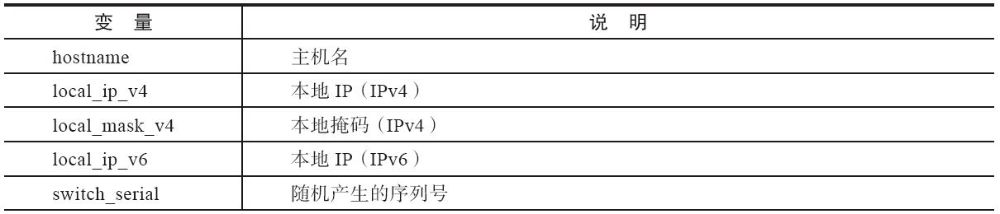
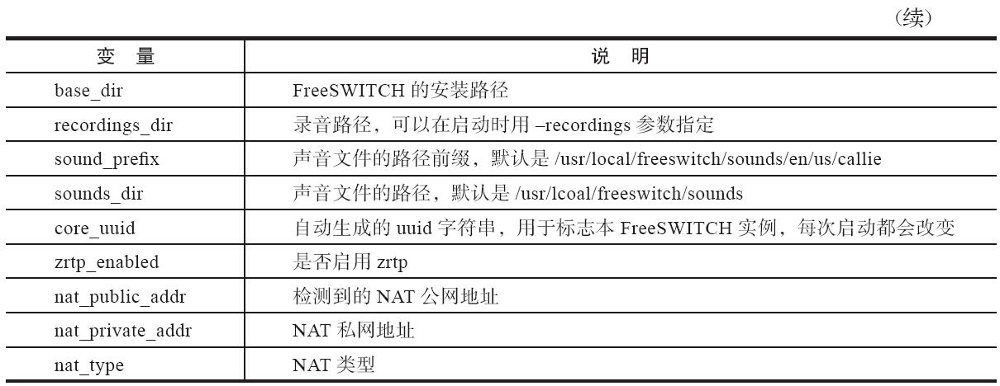

5.3 配置文件
配置文件由许多XML文件组成。在系统装载时，XML解析器会将所有XML文件组织在一起，并读入内存，组成一个大的XML文档（Document），称为XML注册表。XML文档本身非常适合描述复杂的数据结构，在FreeSWITCH中可以非常灵活地使用这些数据。这种设计的好处是可以帮助实现非常高的可扩展性。并且，XML也是一个国际通用的标准，其他外部应用程序也可以很容易地生成XML，从而很容易地与FreeSWITCH集成。另外，系统还允许在某些XML节点上安装回调函数，当这些节点的数据变化时（如在reloadxml时），系统便自动调用这些回调函数，以更新系统的内部数据或状态等。
使用XML唯一的不足就是手工编辑这些XML比较困难，但正如其作者所言 [1] ，他绝对不是XML的铁杆粉丝，他认为人们在理解XML的过程中迷失了方向，相反，把一个复杂的对象序列化成文本形式以及用一个易于解析又易于生成的标记语言来描述这正是XML的长处。使用XML的最高境界是让所有人意识不到它的存在。虽然现在还没有谁能做到这一点，但随着XML的发展以及更多的GUI界面和配置程序出现，终有一天会发展到只有高级用户才会去看这些XML，那时其他用户就意识不到XML的存在了。
在继续讨论配置文件之前，我们先来看一下这些配置文件的目录结构。在本书第3章我们已经提到过，配置文件的目录结构如下（其中，带扩展名的是文件，其他的一般都是目录）：
├── freeswitch.xml
├── mime.types
├── notify-voicemail.tpl
├── tetris.ttml
├── vars.xml
├── voicemail.tpl
├── web-vm.tpl
├── autoload_configs
├── chatplan
├── dialplan
│
├── default
│
├── public
│
└── skinny-patterns
├── directory
│
└── default
├── ivr_menus
├── jingle_profiles
├── lang
│
├── en
│
│
├── demo
│
│
├── dir
│
│
├── ivr
│
│
└── vm
│
├── fr
│
│
├── demo
│
│
├── dir
│
│
└── vm
├── mrcp_profiles
├── sip_profiles
│
├── external
│
└── internal
└── skinny_profiles
其中最重要的一个配置文件是freeswitch.xml，它的作用是将所有配置文件“粘”到一起。只要有一点点XML [2] 基础知识，都可很容易理解这些配置。其中，X-PRE-PROCESS标签是FreeSWITCH中特有的，它称为预处理指令，用于设置一些变量和装入其他配置文件。
在XML加载阶段，FreeSWITCH的XML解析器会先将预处理命令展开，在FreeSWITCH内部生成一个大的XML文档。log/freeswitch.xml.fsxml是FreeSWITCH内部XML的一个内存镜像（注意，它在log目录中，而不是在conf目录中，由于它是动态生成的，所以用户不应该手工编辑它）。它对调试非常有用：假设你不慎弄错了某个标签，又不知道它错在哪了，可以尝试让FreeSWITCH重新加载XML（reloadxml），这时在FreeSWITCH的日志中就可以看到XML某一行出错的提示，在freeswitch.xml.fsxml就能很容易地定位到这一行。
完整的XML文档分为以下几个重要的部分：configuration（配置）、dialplan（拨号计划）、chatplan（聊天计划）、directory（用户目录）及phrase（分词），每一部分又有不同的配置。由于完整的XML非常大，而且大的XML文档已经对X-PRE-PROCESS标签进行处理，隐藏了很多配置的细节，因此这里我们还是按单个的文件或目录进行介绍。
5.3.1 freeswitch.xml
freeswitch.xml是所有XML文件的黏合剂，我们先从它讲起。为了便于讲解，下面是一个精简过的freeswitch.xml。
<?xml version="1.0"?>
<document type="freeswitch/xml">
<!-- #comment
这是一个配置文件，本行是注释 -->
<X-PRE-PROCESS cmd="include" data="vars.xml"/>
<section name="configuration" description="Various Configuration">
<X-PRE-PROCESS cmd="include" data="autoload_configs/*.xml"/>
</section>
</document>
众所周知，XML文档是一种树型的结构。在这里，它的根是document，在document中，有许多Section，每个Section都对应一部分功能。其中有两个X-PRE-PROCESS预处理指令，它们的作用是将data参数指定的文件内容包含（include）到当前文件中来。
上述freeSwitch.xml文件没有特别的作用，它就是将不同的配置文件“包含”到不同的部分（Section）中，从而生成一个大的XML配置文件。最后大的配置文件将类似下列代码所示：
<?xml version="1.0"?>
<document type="freeswitch/xml">
<section name="configuration" description="Various Configuration">
<configuration name="mod1.conf" description="Mod 1"/>
<configuration name="mod2.conf" description="Mod 2"/>
<configuration name="mod3.conf" description="Mod 3"/>
</section>
<section name="dialplan" description="XML Dialplan ">
<context name="default " description="default Dialplan"/>
<context name="public" description="public Dialplan"/>
</section>
</document>
可以看出，configuration这个Section中有很多configuration，而dialplan这个Section中有很多Context。关于这些配置项的具体含义我们将在后面相关的章节讲解，在此就不多讲了。
由于X-PRE-PROCESS是一个预处理指令，FreeSWITCH在加载阶段只对其进行简单替换，并不进行语法分析，因此对它进行注释是没有效果的，这是一个新手常犯的错误。下面举例说明一下。
假设vars.xml的内容如下，它是一个合法的XML：
<!-- this is vars.xml -->
<vars>
<var1>xxxxx</var1>
<var2>xxxxx</var2>
</vars>
<!-- end of vars.xml -->
若在调试阶段想把一条X-PRE-PROCESS指令注释掉：
<!-- <X-PRE-PROCESS cmd="include" data="vars.xml"/> -->
当FreeSWITCH预处理时，还没有到达XML解析阶段，也就是说它还不认识XML注释语法，而仅会机械地将预处理指令替换为如下的vars.xml里的内容：
<!-- <!-- this is vars.xml -->
<vars>
<var1>xxxxx</var1>
<var2>xxxxx</var2>
</vars>
<!-- end of vars.xml --> -->
因而，由于XML的注释不能嵌套，这里便产生了错误的XML。解决办法是破坏掉X-PRE-PROCESS的定义，如作者常用下面两种方法：
<xX-PRE-PROCESS cmd="include" data="vars.xml"/>
<XPRE-PROCESS cmd="include" data="vars.xml"/>
由于FreeSWITCH不认识xX-PRE-PROCESS及XPRE-PROCESS，因此它会忽略该行，相当于注释掉了。
5.3.2 vars.xml
vars.xml主要通过X-PRE-PROCESS指令定义了一些全局变量，如：
<X-PRE-PROCESS cmd="set" data="domain=$${local_ip_v4}"/>
<X-PRE-PROCESS cmd="set" data="domain_name=$${domain}"/>
<X-PRE-PROCESS cmd="set" data="hold_music=local_stream://moh"/>
<X-PRE-PROCESS cmd="set" data="use_profile=internal"/>
读者可能已经注意到了，该指令使用set表示要设置一个变量。如上述第1行，将domain这一变量的值设置为$${local_ip_v4}。那么$${local_ip_v4}是什么意思呢？它又是从哪里来的呢？
可以这样讲，在这里使用X-PRE-PROCESS设置的变量都称为全局变量，它们在FreeSWITCH运行期间永远都是有效的。而后面可能还会遇到局部变量，它们通常在拨号计划中，在一个呼叫的生命周期中才有效。如果需要引用这些变量，则全局变量以$${var}表示，临时变量以${var}表示。
在加载vars.xml之前，FreeSWITCH就已经“算”出并设置了一些全局变量，也就是说有些变量是系统在运行时自动设置的，其有默认的值，如表5-2所示。
表5-2 系统自动设置的变量


在实际使用中，可以使用global_getvar或这个API命令来查看这些变量的值，如：
freeswitch> global_getvar sound_prefix
/usr/local/freeswitch/sounds/en/us/callie
freeswitch > global_getvar local_ip_v4
192.168.7.6
由于这些变量是在vars.xml加载前设置的，因而可以在varx.xml中覆盖它们，如：
<X-PRE-PROCESS cmd="set" data="local_ip_v4=192.168.1.123"/>
上面的设置经常会用到，因为有时候FreeSWITCH自动“算”出的值可能不是你想要的，如上面的local_ip_v4的值，在服务器有多个网卡的情况下，可能希望它能得到另外一个网卡的IP地址，这时候就可以通过手动的方式设置该变量的IP来实现。
5.3.3 autoload_configs目录
autoload_configs目录下的各种配置文件会在系统启动时装入。一般来说都是模块级的配置文件，每个模块对应一个（注意，并不是所有的模块都有配置文件）。文件名一般以“模块名.conf.xml”的方式命名（模块名中不包含“mod_”，如sofia.conf.xml）。
各模块的配置文件不尽相同，其中的配置项也都是由不同的模块分别解析的。这里我们以sofia.conf.xml为例简单介绍一下。
<configuration name="sofia.conf" description="sofia Endpoint">
<global_settings>
<param name="log-level" value="0"/>
<!-- <param name="auto-restart" value="false"/> -->
<param name="debug-presence" value="0"/>
<!-- <param name="capture-server" value="udp:homer.domain.com:5060"/> -->
</global_settings>
<!--
The rabbit hole goes deep. This includes all the
profiles in the sip_profiles directory that is up
one level from this directory.
-->
<profiles>
<X-PRE-PROCESS cmd="include" data="../sip_profiles/*.xml"/>
</profiles>
</configuration>
该配置文件比较简单，首先它定义了一个configuration标签，其中name表示名字，这里是sofia.conf，而后面的description是一个简单的描述。
其实，sofia.conf.xml的文件名并不重要，完全可以改成其他的名字，只要扩展名是.xml就可以正常被freeswitch.xml中的X-PRE-PROCESS预处理指令装入。这里重要的是，这个配置文件中的configuration标签的name属性，mod_sofia在启动时会向XML注册表中查找name为“sofia.conf”的configuration，进而访问其下面的配置参数。
global_settings标签定义了一些全局参数，具体参数的意义我们在此就不多解释了。
profiles标签可通过X-PRE-PROCESS指令装入其他的配置文件，这些配置文件一般都是每个文件描述了一个profile（见默认的conf/sip_profiles/internal.xml），关于这些profile我们将在第8章中详细讲解。在此我们仅看一下profile装入后的效果，具体如下：
<profiles>
<profile name="profile1"></profile>
<profile name="profile2"></profile>
</profiles>
另外，autoload_configs目录中有一个特殊的modules.conf.xml，其决定了FreeSWITCH启动时自动加载哪些模块。如下面的配置片断，如果需要在FreeSWITCH启动时自动加载某个模块，就在这里添加一行，如果不需要，就注释掉或直接删除。下面列出了该配置文件的前几行：
<configuration name="modules.conf" description="Modules">
<modules>
<!-- Loggers (I'd load these first) -->
<load module="mod_console"/>
<load module="mod_logfile"/>
<!-- <load module="mod_syslog"/> -->
最后，autoload_configs目录中还有一个post_load_modules.conf.xml文件，其格式和用法与modules.conf.xml差不多，不同的是其中定义的模块加载时间比较晚。
5.3.4 其他
上面我们大体了解了配置文件的目录结构和简单的配置格式。其他配置文件的配置方法也大同小异。至于具体的配置项的含义只有到了具体的应用时才有意义，因此，我们后面用到某些项时，会详细进行说明。不过，在结束本节之前，我们还需简单介绍以下几个目录，因为我们在后面的章节中可能会经常提到它们：
·dialplan目录：该目录下的文件定义了XML拨号计划（Dialplan）。拨号计划是Free-SWITCH中很重要的一部分，它用于对进电话进行路由。我们将会在第6章专门讲解拨号计划。
·ivr_menues目录：该目录下存放了默认的一些IVR菜单的例子。
·directory目录：该目录中的配置文件决定了当FreeSWITCH作为注册服务器时，哪些用户可以注册，即用于配置本地用户，其中的配置信息称为用户目录。FreeSWITCH的用户目录支持多个域（Domain），每个域可以写到一个XML文件中。默认的配置包括一个default.xml，其中定义了1000~1019一共20个用户（实际上是装入了下一级子目录中的20个配置文件）。
[1] Trust me.I am far from XML's biggest fan,but I do feel it's actual uses are lost in a sea of contrived forced solutions that give it a bad name.To serialize complex objects to and from a text format and to make markup that is easily parsed and generated are the real strengths of XML.The best used XML is XML nobody ever realizes is even there.Certainly that is not true completely with FreeSWITCH today but as we scale and more GUI's and config apps are made,the curve will be in our favor and most people besides only the truly advanced users will ever have to see the XML again.---Anthony Minessale 全文见：http://www.freeswitch.org/node/123。
[2] XML由标签（Tag）和属性构成。<tag>和</tag>组成一对标签，如果该标签有相关属性，则以<tag attr="value"></tag>形式指定。有些标签无须配对，但必须以“/>”关闭该标签定义，如<other_tag attr="value"/>。